Cazando Eclipses
Un proyecto transmedia sobre los minutos en que el día se equivoca.
Umbrhalia by LFAE · Gabriela Isabel Vera Garfias
Umbrhalia
Narrar
Cuentos de Ohr y audio: diez cuentos en tres arcos
Recordar
Archivo de palabras y línea del tiempo
Vivir
Instalación, talleres y documental
Guía
Recorrido científico y próximos eclipses
Memorias de la Umbra
Rama de la tesis: atlas de 177 eclipses en México
Qué es
Ohr, la conciencia de la materia que vio formarse el universo, narra. El público deja su palabra. Cada eclipse vivido mantiene la ventana abierta.
givgme.github.io/umbrhalia
Escanea y entra a la ventana
La próxima ventana
En los próximos 100 años habrá 69 eclipses totales y 4 híbridos. Tres cruzan México: 2052, 2071 y 2078.
El sitio público, los cuentos de Ohr, el archivo de palabras y el registro de la expedición LFAE a Ojuela, Durango, el 8 de abril de 2024.